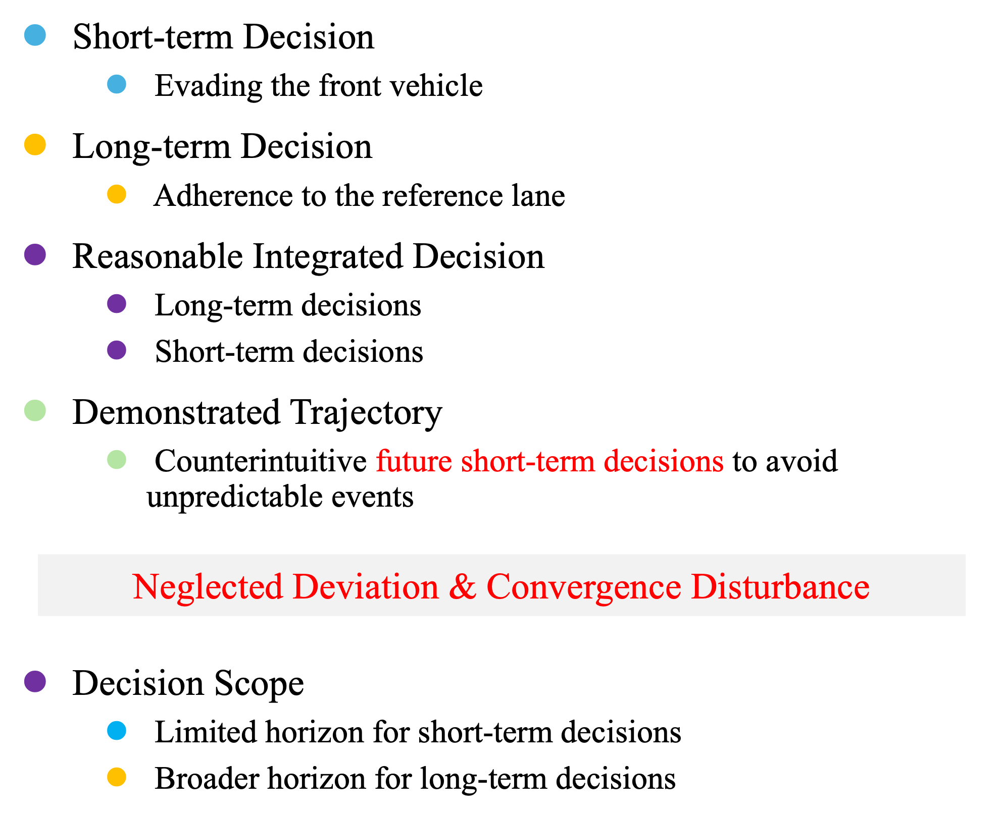
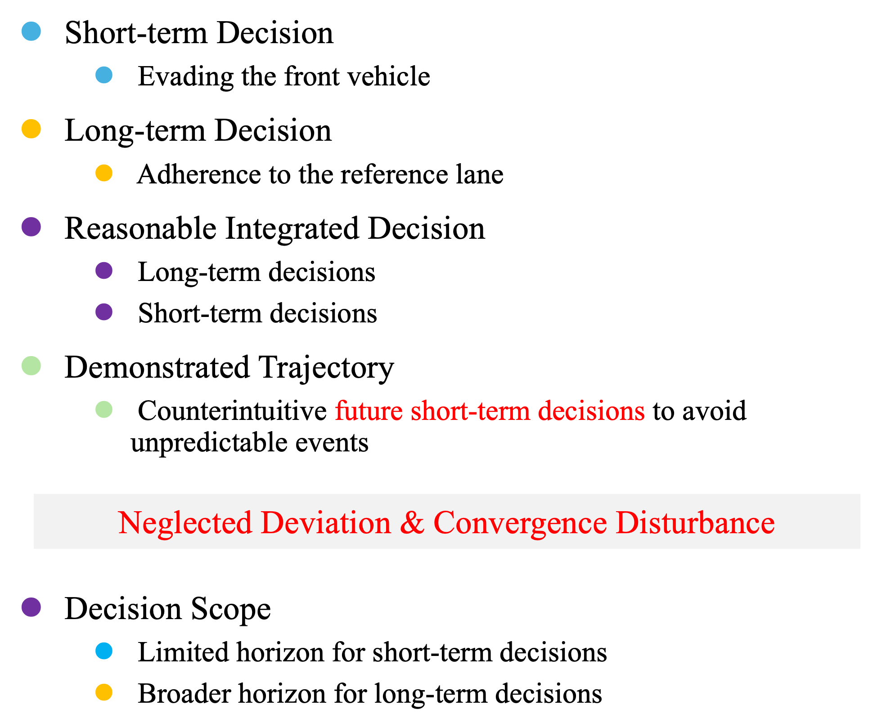

Abstract
In the context of autonomous driving, learning-based methods have been promising for the development of planning modules.
During the training process of planning modules, directly minimizing the discrepancy between expert-driving logs and planning output is widely deployed.
In general, driving logs consist of suddenly appearing obstacles or swiftly changing traffic signals, which typically necessitate swift and nuanced adjustments in driving maneuvers.
Concurrently, future trajectories of the vehicles exhibit their long-term decisions, such as adhering to a reference lane or circumventing stationary obstacles.
Due to the unpredictable influence of future events in driving logs, reasoning bias could be naturally introduced to learning based planning modules, which leads to a possible degradation of driving performance.
To address this issue, we identify the decisions and their corresponding time horizons, and characterize a so-called decision scope by retaining decisions within derivable horizons only, to mitigate the effect of irrational behaviors caused by unpredictable events.
This framework employs wavelet transformation based log preprocessing with an effective loss computation approach, rendering the planning model only sensitive to valuable decisions at the current state.
Since frequency domain characteristics are extracted in conjunction with time domain features by wavelets, decision information across various frequency bands within the corresponding time horizon can be suitably captured.
Furthermore, to achieve valuable decision learning, this framework leverages a transformer based decoder that incrementally generates the detailed profiles of future decisions over multiple steps.
Our experiments demonstrate that our proposed method outperforms baselines in terms of driving scores with closed-loop evaluations on the nuPlan dataset.
 
